Aquí tenemos ya la segunda parte. Al final del todo tenéis un enlace a Spotify donde encontraréis una recopilación de temas de estos discos. Lamentablemtene todos no están disponibles en esta aplicación, pero no os preocupéis porque he encontrado unos buenos sustitutos.
MAXIMUM THE HORMONE – Buiikikaesu (2007)
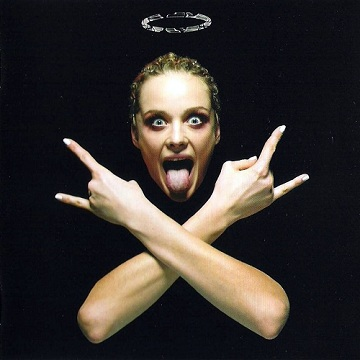La energía se desborda por los cuatro costados en este disco. La explosividad del nu-metal, la endiablada velocidad del punk-rock y festivos ritmos ska-funk se combinan con un juego de contrastadas voces: una masculina brutal y desgarrada, otra masculina melódica y una tercera femenina dulce y cándida que enfatiza el lado pop-feliz del conjunto. Este cuarteto japonés es experto en crear canciones de consumo inmediato, con unas transiciones estilísticas aparentemente imposibles ejecutadas con sumo acierto, con un gancho demoledor. Fresco, exótico —por ese toque japonés—, original, divertido y friki.
{kind=link}
MILLENCOLIN – Pennybridge Pioners (2000)
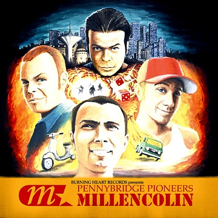El santo grial de toda una generación de punk-rockers y skaters con ganas de divertirse no estaba en la soleada California, si no en Suecia. Tan poderosamente adictivo y directo, este disco supuso un enorme éxito comercial (sin precedentes) para Millencolin, que dejaron su hardcore melódico con toques de ska de sus inicios por un punk-rock más maduro, el que mantienen una velocidad moderada. Completo y equilibrado en todos los sentidos, gracias en parte a la excelente producción a cargo de Brett Gurewitz, Pennybridge Pioners es todo un compendio de brillantes melodías e himnos míticos, que hacen digno de calificarlo como redondo.
{kind=link}
POWERMAN 5000 – Mega!! Kung Fu Radio (1997)
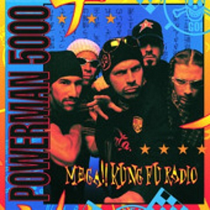Antes de que se decantaran por su rock de tinte industrial y horror-futurista-50ero, que con mayor o menor razón ha sido duramente criticado, Powerman 5000 parieron un discazo. Aupado por la creciente escena nu-metalera de la época pero situado a un nivel mucho más friki, original y primigenio, este disco es una mezcla de afilado funk-rock con un rico set de percusión, en la que Spider se decanta por un registro arrastrado que no llega a convertirse totalmente en rapeo; todo ello con aroma a humor, resaca, paranoia y ulterior accidente con lesiones. Un trabajo que reivindico, y que considero lo más interesante de este grupo antes de su transformación en la copia fraternal de Rob Zombie.
{kind=link}
TROPHY SCARS – Never Born, Never Dead (2011)
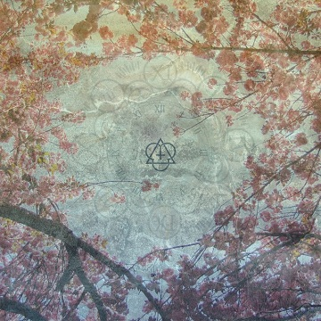Por muy bien que nos lo pasemos en el verano, todos los días acaban en una puesta de sol, y es inevitable conectar con momentos más emotivos y trascendentales. Es aquí donde Trophy Scars revuelven la consciencia, y bajo un hilo muy esperanzador y espiritual, nos ofrecen su blues psicodélico con fabulosos solos de guitara y teclado, consistente e ingenioso, presto a utilizar coros femeninos góspel con una elegancia que los acerca a Faith No More o Fun Lovin’ Criminals. Un trabajo único, y positivamente corto (si fuera un LP no funcionaría igual), que demuestra que lo bien que pueden llegar a evolucionar unas raíces post-hardcore.
{kind=link}
THIEVERY CORPORATION – Culture of Fear (2011)
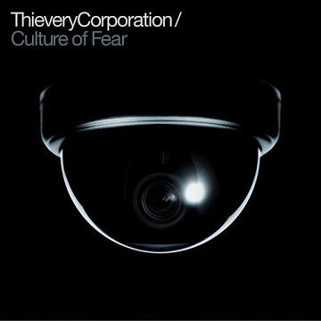Es hora de ponernos cómodos, colocar las piernas en algún lugar alto y relajarnos. Este dúo de DJ’s americanos, maestros del groove a los que siempre les ha gustado mezclar el downtempo con elementos de dub, acid jazz y ritmos latinos sigue manteniéndose fiel a su estilo en su último disco. Esos ritmos propios club de fumeteo —con su cálido y característico sonido de la caja—, sobre los que destacan colaboraciones a los micros variadas y brillantes (algunas cercanas al hip-hop, aunque las mejores las voces femeninas más soul) nos aportan ese necesario tono nocturno y lounge a nuestra recopilación.
{kind=link}
HEAD AUTOMATICA – Decadence (2004)
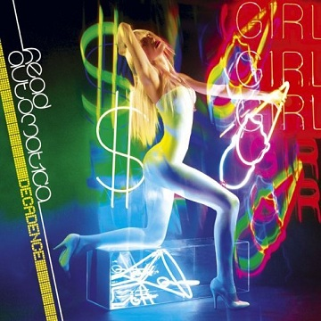Luces de discoteca. Daryl Palumbo rompe todos los moldes que hasta el momento había creado con Glassjaw y quema la pista de baile cantando con su inconfundible estilo sobre beats gordos y guitarras con groove y efectos totalmente alocados. Recurriendo a los superficiales tópicos veraniegos (chicas y fiestas), la música de Head Automatica queda claro que está hecha por y para la diversión. Tan excesivo que no le importa incluso pecar de hortera, energético y despreocupado, algunas veces abiertamente pop, este disco podría ser definido como una fiebre de sábado-noche-rock del siglo XXI.
{kind=link}
JEFF THE BROTHERHOOD – Hypnotic Nights (2012)
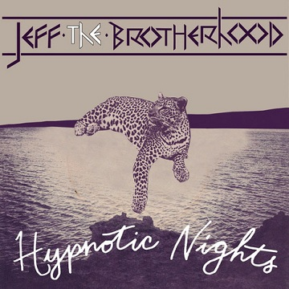Estos dos hermanos, Jake y Jamin Orall, llevan tocando diez años pero parece que este verano la han liado gorda con su último (y séptimo) disco que cuenta con la producción de Dan Auerbach (The Black Keys). Con su rock garajero a todo volumen, de estribillos pegadizos, guitarras distorsionadas, aromas punk y cadencias pop (que ha aprendido mucho de Weezer y Ramones), lo que necesitamos es una furgoneta destartalada y bastante cerveza —a poder ser un Sixpack— para entender el verano a su manera, de forma hedonista, pasándolo bien sin mirar donde estaremos mañana.
{kind=link}
NOFX – So Long And Thanks for All The Shoes (1997)
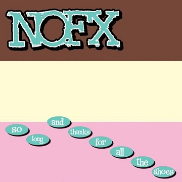El punk-rock es para mí un género imprescindible en la época del año que nos atañe, pero lo es más, si como en éste caso se potencia el buen rollo y las buenas melodías. Temas inmediatos, de menos de 2 minutos, con un doble pedal a todo gas se combinan perfectamente con otros temas más relajados donde no puedes dejar de cabecear, o auténticos hits de ska-punk como All Outta Angst, Champs Elysées o Eat The Meek. ¡Que trompetas tan magistralmente empleadas! Queda claro que con este disco NOFX alcanzaron el auténtico top en su carrera, o como dice su primer tema, se mantuvieron en la élite del punk rock.
{kind=link}
SIGUR RÓS – Með suð í eyrum við spilum endalaust (2008)
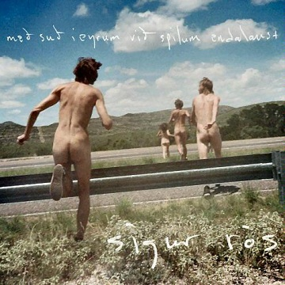Entendedlo. Los veranos de las zonas periglaciares no son como los nuestros. Allí son tímidos, húmedos y toda una explosión de flores y colores que bastan para que los corazones, helados durante el invierno, vuelvan a latir y calentar los cuerpos. A pesar de que en la segunda mitad de este disco el grupo vuelve a retirarse a sus terrenos más introspectivos y delicados, éste es —a su manera— el disco festivo de Sigur Rós, al menos el de mayor contenido folk y pop. Violines, campanillas, cornetas, trombones y xilófonos se suman a la fórmula musical que estos islandeses ya llevaban empleado para emocionarnos.
{kind=link}
RIVAL SCHOOLS – Pedals (2011)
 Impresionante regreso de la banda de Walter Schreifels tras 10 años de parón que no sólo iguala a su predecesor si no que lo supera. Rock alternativo exquisito, guitarrero y melódico, más maduro y sereno que United By Fate, dinámico en la instrumentación y rico en influencias y matices. El disco goza de una faceta muy luminosa como es ejemplo 69 Guns o Shot After Shot y no tiene miedo a adentrarse en terrenos más pop como Choose Your Adventure. Una auténtica ensalada variada de hits que refresca totalmente el carácter noventero de Rival Schools.
Impresionante regreso de la banda de Walter Schreifels tras 10 años de parón que no sólo iguala a su predecesor si no que lo supera. Rock alternativo exquisito, guitarrero y melódico, más maduro y sereno que United By Fate, dinámico en la instrumentación y rico en influencias y matices. El disco goza de una faceta muy luminosa como es ejemplo 69 Guns o Shot After Shot y no tiene miedo a adentrarse en terrenos más pop como Choose Your Adventure. Una auténtica ensalada variada de hits que refresca totalmente el carácter noventero de Rival Schools.
MINUS THE BEAR – Menos El Oso (2005)
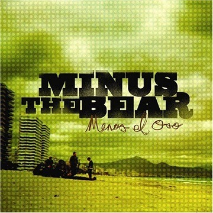Los de Seattle siempre han sido un grupo de difícil clasificación, indie-prog-rock sería un adjetivo demasiado rebuscado, aunque sí es la mejor forma de categorizar su experimentación. Su espíritu de transgresión de las ataduras de los convencionalismos del pop actual y el coqueteo con patrones de la electrónica hacen que la primera escucha a este disco sea totalmente sorprendente y refrescante. Sensual y ligero, pero a la vez nunca predecible y lleno de influencias de una miríada de estilos, el segundo trabajo de Minus The Bear se gana por encima de sus otros trabajos el título de disco para el verano.
{kind=link}
THE GET UP KIDS – There Are Rules (2011)
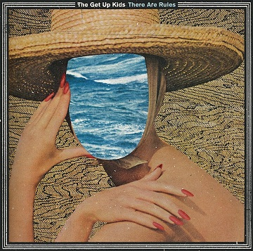Si alguno se esperaba que tras 6 años de paréntesis los americanos volvieran con su pionero rock emo puede que se llevara un chasco con este disco. Queriendo contradecir a la afirmación de su título, aquí no hay reglas, y la tónica es un continuo crossover entre estilos como el indie, el post-punk, la psicodelia, a la vez que el grupo recupera todas las emociones y sensaciones presentes en su catálogo musical. Los sintetizadores y las memorables melodías saben pasar fácilmente de la zona de dulzor a la de acidez, y brillan con luz propia por encima de todas las texturas y efectos de la sección de cuerda, convirtiendo este trabajo es un excelente cóctel veraniego.
{kind=link}
Lista de Spotify: 25 Discos para el Verano SuicideByStar

Apoyános